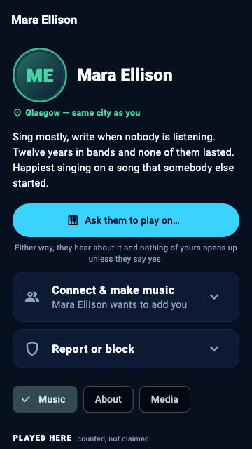

The Open Mic
Step onto the Open Mic when you want company. Step off whenever you like.
Being findable is off by default. Songs stay in your room until you put them up. Everything you make stays yours, and private until you move it.
Meeting new people and listing yourself or a song here are for adults. Under 18, you see only your own people's songs, newest first. Age rules →
Hear their Music, read About them, explore their Media. Each musician chooses what to share.

Ask for bass on the second verse. The song comes with it: audio, key, tempo and the parts already there. Answer an ask in one tap.
Pick what you play. Press Listen to hear songs that need it. Judge the fit by ear.
The Open Mic has a night every week, and the app shows when in your own time zone. Put a song that is already on the Open Mic on the night's list. Press Remind me and the app tells you before a night with songs on its list.
Only an adult who owns the song's room can put it on the list. Nothing is counted, and there is no audience number.
Open your door on a song. Your people see it lit and tap to knock. Let someone in: a room for the two of you, that one song, and time to talk it over.
Everybody else on the Open Mic sees it only if you say so. It closes by itself, and nobody is told a knock went unanswered.
Tonight at a place: a place is a code, the same one on its poster. It never asks where you are.
Met somebody? Hold your phones close. Both of you tap We met. It connects nobody until you both tap.
Strangers at a place are for people 18 and over.
No badges, levels, streaks or chart of the most liked. A phone recording gets in as readily as a mastered mix.
Anywhere somebody else's music, picture or message appears, you can report it and block them. Blocking closes anything already open between you. Automated picture checks do not guarantee that everything you see is suitable. Report or block anything that concerns you.
A noticeboard with an end. Some days nobody needs anything. There is room for that, too.
The beta is small and free, and I read everything that comes back.
Email for an invite